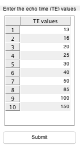

function [ final_data ] = getTE( time_length, te_values )
min_args = uint8(0);
max_args = uint8(2);
narginchk(min_args, max_args);
if ~exist('te_values', 'var')
te_values = zeros(1, time_length);
else
te_values = cast(te_values, 'double');
end
condition = false;
te_input_fig = figure('Name', 'TE', 'Position', [300 100 160 300]);
while ~condition
t = uitable(te_input_fig,...
'Data', te_values',...
'Position', [10 50 140 220],...
'ColumnWidth',{100}, ...
'ColumnEditable', true, ...
'ColumnName', {'TE values'});
set(gcf, ...
'ToolBar', 'none', ...
'MenuBar', 'none');
uicontrol('Style', 'pushbutton', ...
'String', 'Submit',...
'Position', [5 12 150 30],...
'Callback', ...
'uiresume(gcbf)');
uicontrol('Style', 'text', ...
'Position', [-20 280 200 10],...
'String', ...
'Enter the echo time (TE) values');
snapnow;
uiwait(te_input_fig);
[condition, values] = verifyData(t.Data);
end
function [cnd, verified_data] = verifyData(te_data)
if isa(te_data, 'double') && ~all(te_data == 0)
verified_data = te_data;
cnd = true;
else
error_msg = sprintf(['Invalid input.\n', ...
'The input must be nummeric and integer.\n',...
'Floating points will be rounded.']);
errordlg(error_msg, 'Input Error');
cnd = false;
end
end
close(te_input_fig);
final_data = uint32(transpose(values));
end
